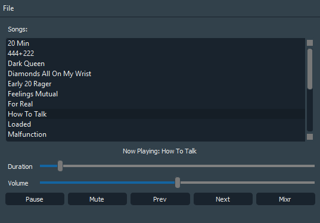

I have recently completed a semester of object oriented programming in C++. I was determined to take what I learned and create something applicable that I could use in my everyday life.
I was dissatisfied with the music players that Windows had to offer, and found that ITunes always ran so slow. So, I decided to create my own simple music player using C++ along with Qt for the graphical user interface.
I didn't aim to create anything groundbreaking or innovative. Just something that would support automatic playback, shuffle, and other basic functionality such as play the next/previous song, pause/play and mute/unmute audio.
Simply, there are three classes: a song class, a playlist class, which held a collection of song objects, and a player class, which facilitated the interaction between a playlist object and the GUI. The song class only had two fields: the file path of the song along with the name of the song, which is the filename of the song. In the future, I hope to find a way to extract metadata from each song to get other attributes, such as the artist and album. But for now, this will suffice.
Styling the Qt GUI was identical to styling using CSS. I decided to create a dark theme. The final result of this project after importing LUV Is Rage 2 looked something like this:
The code for this project can be viewed on my GitHub repository here. I will most likely come visit this project in the future. This is a very simple music player, and lacks a lot of the functionality of a modern music player. Nevertheless, I had a lot of fun creating something built in C++ that I could use on a daily basis.